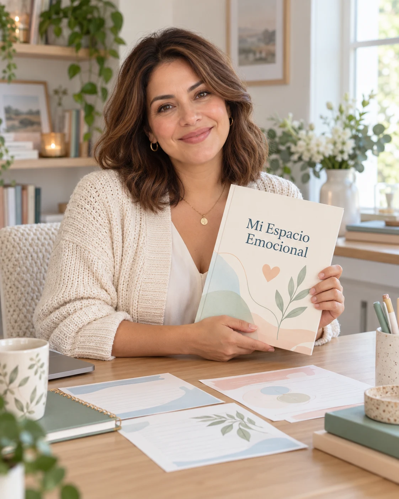

¿Qué estoy sintiendo?
Identificar emociones y situaciones con preguntas concretas y apoyos visuales.
Un cuaderno visual en español para reconocer pensamientos, sensaciones y emociones, explorar recursos de afrontamiento y abrir conversaciones con personas de confianza.
Ver las actividades por dentro ↗Actividades de reflexión para acompañar la adolescencia, a su ritmo.
Empezamos por observar lo que se piensa, lo que se siente en el cuerpo y cómo se responde. Desde ahí, el cuaderno abre espacio para explorar autoestima, estrés escolar, amistades, redes sociales y relaciones familiares.
Identificar emociones y situaciones con preguntas concretas y apoyos visuales.
Escribir o dibujar para dar forma a lo que cuesta decir y elegir qué compartir.
Explorar recursos personales y elegir un siguiente paso pequeño y realista.
El iceberg invita a explorar la diferencia entre lo que se muestra y lo que se vive por dentro.
Toca las imágenes para ampliarlas.
Imágenes ilustrativas de presentación. El producto se entrega como cuaderno digital PDF.
Conceptos visuales sobre emociones y adolescencia, en un lenguaje cercano.
Preguntas guiadas, mapas personales y espacios para escribir o dibujar.
Propuestas para empezar cuando todavía cuesta explicar lo que pasa por dentro.
Una hoja diaria y otra semanal para volver a observar experiencias y recursos.
Frases para recortar, guardar o adaptar con palabras propias.
Orientaciones para familias y educadores sobre escucha, privacidad y apoyo.
El cuaderno es un espacio personal. Acompañar también significa respetar lo que un adolescente decide guardar para sí.
La IA ya forma parte de su mundo. Aprender a usarla con criterio también puede formar parte de las conversaciones en casa y en la escuela.
Empieza aquí con tres ejemplos prácticos. Esta guía está disponible en esta página; el producto de pago es el cuaderno PDF y no incluye un chatbot.
Para dividir una tarea grande en pasos, sin pedir que la IA haga todo el trabajo.
“Ayúdame a organizar una tarea escolar en pasos de 15 minutos. Hazme preguntas sobre el tiempo disponible. No resuelvas la tarea por mí.”
Una respuesta convincente puede contener errores. Revisar fuentes y contrastar con un adulto o docente ayuda a decidir qué usar.
“Señala qué partes de tu respuesta necesitan verificación y qué fuentes originales debería consultar. Si no sabes algo, dilo.”
Usar ejemplos inventados en lugar de compartir nombres, escuela, fotos, conversaciones privadas o datos de salud. Revisar la edad mínima y las condiciones de cada herramienta con un adulto.
Antes de enviar: “¿Podría hacer esta pregunta sin revelar información privada mía o de otra persona?”
Para emociones difíciles, una conversación con una persona de confianza importa. Un chatbot no sustituye apoyo humano ni atención profesional.

Sofía Martín · Presentadora virtual.
Mi Espacio Emocional propone un recorrido por las preguntas, emociones y experiencias de crecer, con actividades que invitan a explorar sin exigir respuestas perfectas.
Sofía Martín es una identidad editorial y presentadora virtual. El nombre y el retrato no representan a una profesional de salud real ni una revisión clínica del cuaderno.
Conocer la edición digital ↗Actividades en español sobre ansiedad, emociones, autoestima, estrés, relaciones y resiliencia.
Porque crecer trae preguntas.
Y acompañar puede empezar con una.
Antes US$295
Ahorras US$283 · 95,9% de descuento
Dispones de 8 minutos desde tu primera visita. El contador no se reinicia al actualizar.
PDF en español · Para imprimir en casa
Producto digital para uso personal. No incluye envío físico. Revisa el importe, las condiciones de pago y la entrega en Monetizze.
Estos comentarios corresponden al material original de referencia en Etsy. No son reseñas de compradores de Mi Espacio Emocional ni de esta edición en español. Su puntuación no ha sido verificada.
Traducciones de los comentarios proporcionados. Los enlaces dirigen a perfiles y no verifican el producto reseñado ni la compra. Estas opiniones no acreditan resultados clínicos.
No. Es un recurso educativo de reflexión y bienestar emocional. No diagnostica ni trata trastornos y no sustituye atención profesional.
No. Es un cuaderno digital PDF para imprimir. No se envía un libro físico.
Tiene 46 páginas, incluyendo portada, guía de uso, actividades, registros, tarjetas de recordatorio y fuentes.
El tamaño del papel. Ambas versiones contienen las mismas actividades. Elige la que corresponda a tu impresora.
Se puede visualizar en dispositivos compatibles con PDF. Para escribir sobre el archivo necesitas una aplicación de anotación. No incluye una aplicación propia.
No. Conviene acordar cómo se utilizará el cuaderno y respetar la privacidad. Compartir respuestas es una invitación, no una obligación.